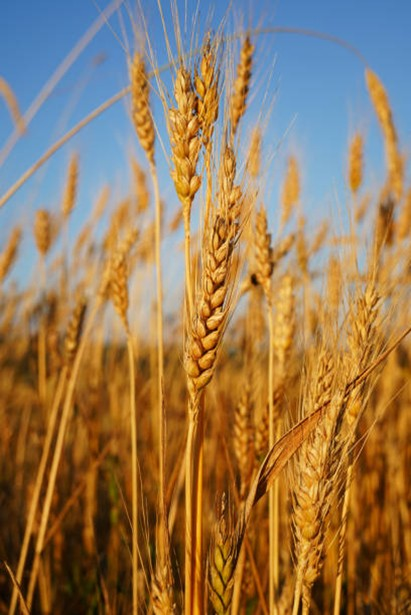

Пшеница использовалась для отработки технологии выращивания продуктов питания в космосе.
На станции «Мир» удалось получить жизнеспособные семена, а на китайской станции «Тяньгун» — провести полный цикл выращивания и собрать второй урожай из «космических» семян.
Самое интересное — это решение проблемы «бесплодия» злаков в космосе. Оказалось, что виной всему газ этилен, который выделяли сами растения. Учёные подобрали специальный устойчивый сорт «Апогей», и он смог дать семена, которые по качеству не уступают земным.
Это важный шаг к созданию автономных космических оранжерей для будущих длительных миссий.